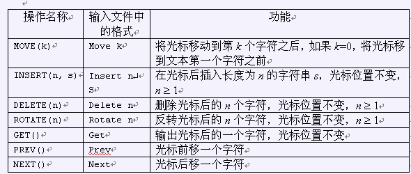
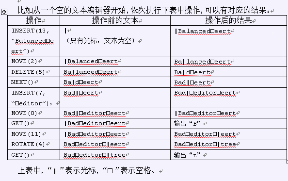

这些日子，可可不和卡卡一起玩了，原来可可正废寝忘食的想做一个简单而高效的文本编辑器。你能帮助他吗？为了明确任务目标，可可对“文本编辑器”做了一个抽象的定义：   文本：由0个或多个字符构成的序列。这些字符的ASCII码在闭区间[32, 126]内，也就是说，这些字符均为可见字符或空格。光标：在一段文本中用于指示位置的标记，可以位于文本的第一个字符之前，文本的最后一个字符之后或文本的某两个相邻字符之间。文本编辑器：为一个可以对一段文本和该文本中的一个光标进行如下七条操作的程序。如果这段文本为空，我们就说这个文本编辑器是空的。 编写一个程序： 建立一个空的文本编辑器。 从输入文件中读入一些操作指令并执行。 对所有执行过的GET操作，将指定的内容写入输出文件。
| F.A.Qs | Home | Discuss | ProblemSet | Status | Ranklist | Contest | 入门OJ | ModifyUser Xeonacid | Logout | 捐赠本站 |
|---|